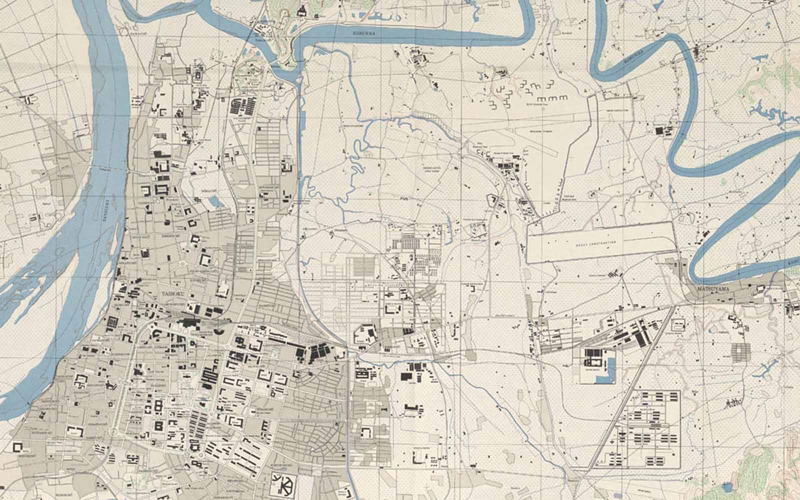
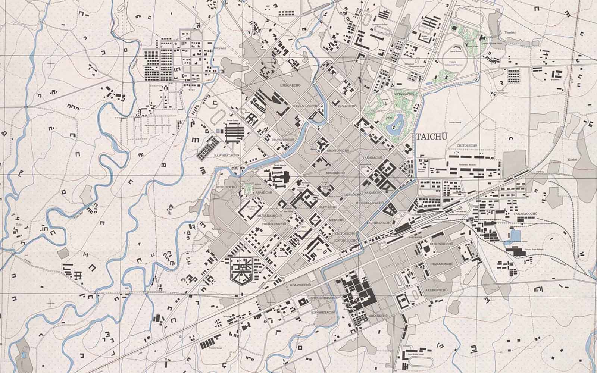
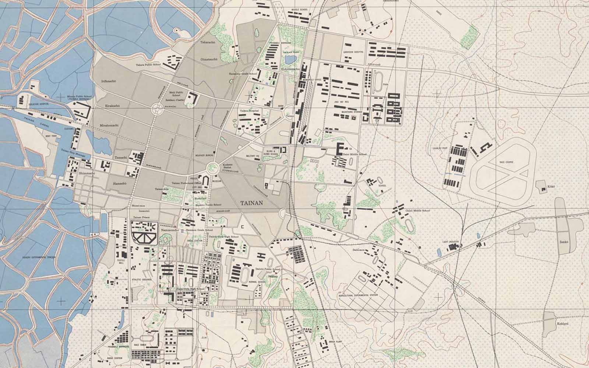
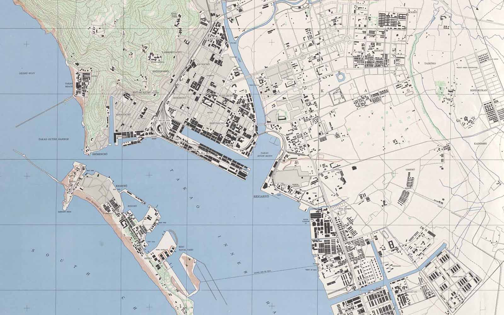

北北基
台北市
新北市
基隆市
桃竹苗
桃園市
新竹市
新竹縣
苗栗縣
中彰投
台中市
彰化縣
南投縣
雲嘉南
雲林縣
嘉義市
嘉義縣
台南市
高屏
高雄市
屏東縣
宜花東
宜蘭縣
花蓮縣
台東縣
澎金馬
澎湖縣
金門縣
連江縣(馬祖)
國家公園




都市計畫、國家公園計畫
主要計畫通盤檢討歷程
台北市
新北市
基隆市
桃園市
新竹市
新竹縣
苗栗縣
台中市
彰化縣
南投縣
雲林縣
嘉義市
嘉義縣
台南市
高雄市
屏東縣
宜蘭縣
花蓮縣
台東縣
澎湖縣
金門縣
連江縣(馬祖)
國家公園